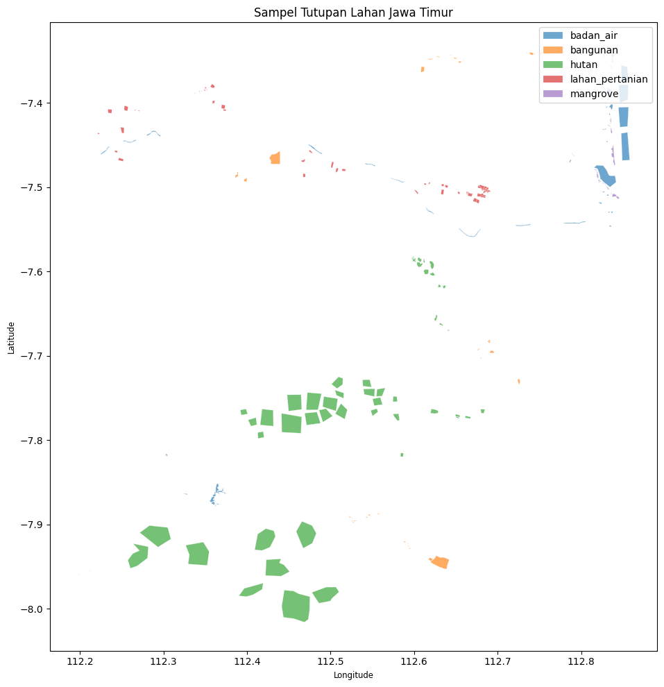
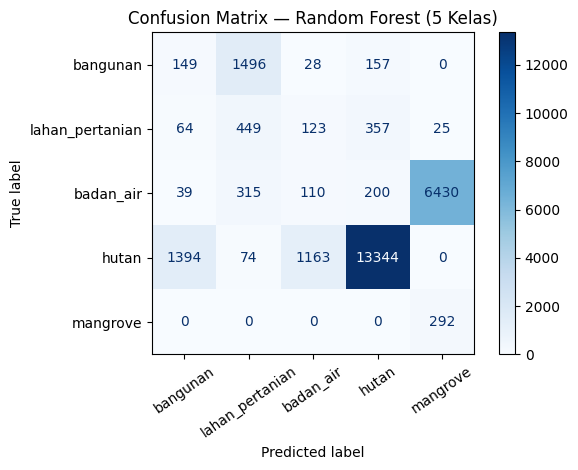
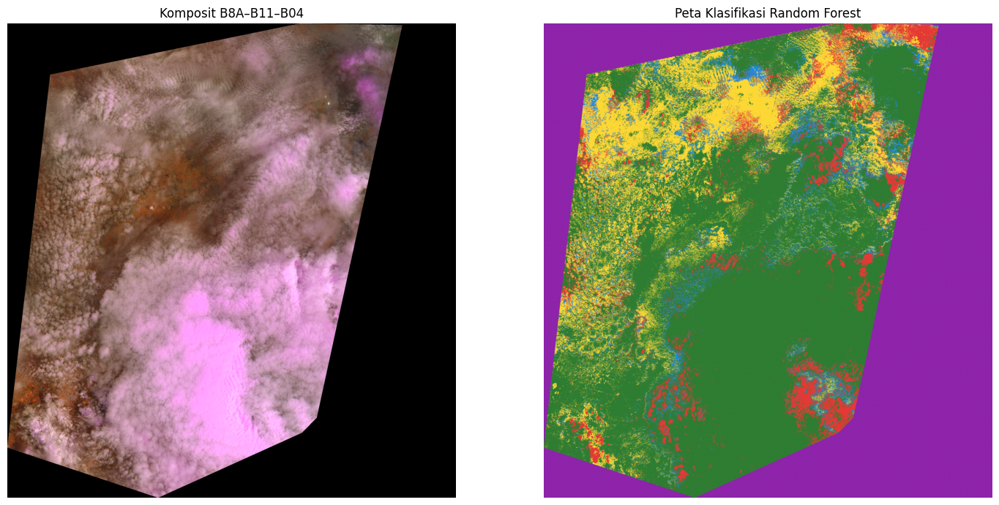
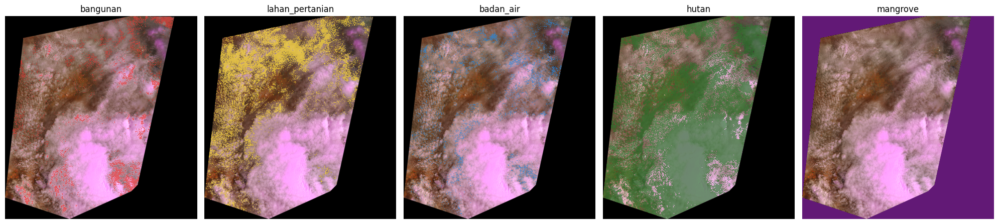

Klasifikasi Tutupan Lahan Jawa Timur dengan Random Forest#
Business Understanding#
Permasalahan#
Informasi mengenai persebaran tutupan lahan diperlukan untuk memahami kondisi permukaan bumi di Jawa Timur. Pengamatan secara langsung terhadap seluruh wilayah membutuhkan waktu dan biaya, sehingga citra satelit dapat dimanfaatkan untuk memperoleh gambaran wilayah secara lebih luas.
Tujuan utama#
Membuat peta tutupan permukaan bumi di Jawa Timur menggunakan citra satelit Sentinel-2 dan metode Random Forest untuk mengelompokkan piksel citra menjadi lima kelas tutupan lahan.
Hasil yang diharapkan#
Peta tematik yang menunjukkan lokasi dan persebaran bangunan, lahan pertanian, badan air, hutan, dan hutan mangrove, disertai evaluasi akurasi model dan perkiraan luas setiap kelas.
kelas yang akan dipetakan#
Kelas: bangunan, lahan pertanian, badan air, hutan, dan mangrove.
Band utama sesuai instruksi: B8A, B11, B04.
Algoritma utama: Random Forest.
Platform: Google Colab.
Apa tujuan penggunaan citra satelit dan Random Forest?#
Citra satelit Sentinel-2: menyediakan informasi spektral permukaan bumi yang dapat digunakan untuk membedakan karakteristik tutupan lahan.
Band B8A, B11, dan B04: menyediakan informasi spektral yang digunakan sebagai fitur masukan model. Band-band tersebut diselaraskan pada grid beresolusi 20 meter.
Random Forest: mempelajari pola dari sampel yang sudah memiliki label kelas, kemudian memprediksi kelas pada piksel citra lainnya.
Evaluasi model: mengukur seberapa baik hasil prediksi sesuai dengan label sampel pengujian.
Peta hasil klasifikasi: menyajikan hasil prediksi secara geografis agar persebaran tutupan lahan lebih mudah dipahami.
1. Instalasi library#
!pip -q install rasterio geopandas shapely scikit-learn matplotlib pandas
2. Import library#
import os, zipfile, json, glob, warnings
import numpy as np
import pandas as pd
import geopandas as gpd
import rasterio
from rasterio.warp import reproject, Resampling, calculate_default_transform
from rasterio.features import geometry_mask, shapes
from rasterio.plot import show
from shapely.geometry import shape, mapping
from shapely.validation import make_valid
from sklearn.ensemble import RandomForestClassifier
from sklearn.model_selection import train_test_split
from sklearn.metrics import (
confusion_matrix, accuracy_score, classification_report,
cohen_kappa_score, ConfusionMatrixDisplay, f1_score
)
import matplotlib.pyplot as plt
from google.colab import files
from IPython.display import display
warnings.filterwarnings("ignore")
os.makedirs("/content/landcover_output", exist_ok=True)
print("Library siap.")
Library siap.
unggah ZIP band dan data mentah GeoJSON
from google.colab import files
import os
import zipfile
import glob
uploaded_zip = files.upload()
zip_candidates = [
n for n in uploaded_zip
if n.lower().endswith(".zip")
]
if not zip_candidates:
raise ValueError("Unggah file ZIP raster Sentinel-2.")
ZIP_PATH = "/content/" + zip_candidates[0]
print("ZIP berhasil diunggah:", ZIP_PATH)
Saving Browser_images.zip to Browser_images (2).zip
ZIP berhasil diunggah: /content/Browser_images (2).zip
uploaded_samples = files.upload()
geojson_candidates = [
n for n in uploaded_samples
if n.lower().endswith(".geojson")
]
if not geojson_candidates:
raise ValueError("Unggah file jatim.geojson.")
SAMPLES_PATH = "/content/" + geojson_candidates[0]
print("GeoJSON berhasil diunggah:", SAMPLES_PATH)
Saving jatim.geojson to jatim.geojson
GeoJSON berhasil diunggah: /content/jatim.geojson
DATA_DIR = "/content/sentinel_bands"
os.makedirs(DATA_DIR, exist_ok=True)
with zipfile.ZipFile(ZIP_PATH, "r") as z:
z.extractall(DATA_DIR)
raster_files = (
glob.glob(DATA_DIR + "/**/*.tif", recursive=True)
+ glob.glob(DATA_DIR + "/**/*.tiff", recursive=True)
)
print("Jumlah raster ditemukan:", len(raster_files))
for path in raster_files:
print(os.path.basename(path))
Jumlah raster ditemukan: 5
2023-02-07-00_00_2023-02-07-23_59_Sentinel-2_L2A_B03_(Raw).tiff
2023-02-07-00_00_2023-02-07-23_59_Sentinel-2_L2A_B11_(Raw).tiff
2023-02-07-00_00_2023-02-07-23_59_Sentinel-2_L2A_B04_(Raw).tiff
2023-02-07-00_00_2023-02-07-23_59_Sentinel-2_L2A_True_color.tiff
2023-02-07-00_00_2023-02-07-23_59_Sentinel-2_L2A_B8A_(Raw).tiff
if not os.path.exists(ZIP_PATH):
raise FileNotFoundError("ZIP raster tidak ditemukan.")
if not os.path.exists(SAMPLES_PATH):
raise FileNotFoundError("jatim.geojson tidak ditemukan.")
if not raster_files:
raise ValueError(
"Tidak ditemukan raster GeoTIFF. "
"Periksa isi ZIP yang diunggah."
)
print("Semua file berhasil disiapkan.")
print("Raster ZIP :", ZIP_PATH)
print("GeoJSON :", SAMPLES_PATH)
print("Jumlah raster:", len(raster_files))
Semua file berhasil disiapkan.
Raster ZIP : /content/Browser_images (2).zip
GeoJSON : /content/jatim.geojson
Jumlah raster: 5
4. Pemeriksaan band raster#
# Deteksi nama band dari nama file. Jika nama file berbeda, edit BAND_HINTS.
BAND_HINTS = {
"B8A": ["B8A", "B08A"],
"B11": ["B11"],
"B04": ["B04", "B4_"]
}
band_paths = {}
for band, hints in BAND_HINTS.items():
matches = [
p for p in raster_files
if any(h.lower() in os.path.basename(p).lower() for h in hints)
and "true_color" not in os.path.basename(p).lower()
]
if matches:
band_paths[band] = matches[0]
print("Band terdeteksi:")
for k, v in band_paths.items():
print(k, "->", os.path.basename(v))
missing = [b for b in ["B8A", "B11", "B04"] if b not in band_paths]
if missing:
raise FileNotFoundError(
f"Band berikut belum ditemukan: {missing}. "
"Pastikan mengunduh raw band B8A, B11, dan B04; bukan hanya True Color."
)
for band, path in band_paths.items():
with rasterio.open(path) as src:
print(
band, "| CRS:", src.crs, "| ukuran:", src.width, "x", src.height,
"| resolusi:", src.res, "| nodata:", src.nodata, "| bounds:", src.bounds
)
Band terdeteksi:
B8A -> 2023-02-07-00_00_2023-02-07-23_59_Sentinel-2_L2A_B8A_(Raw).tiff
B11 -> 2023-02-07-00_00_2023-02-07-23_59_Sentinel-2_L2A_B11_(Raw).tiff
B04 -> 2023-02-07-00_00_2023-02-07-23_59_Sentinel-2_L2A_B04_(Raw).tiff
B8A | CRS: EPSG:4326 | ukuran: 2364 x 2500 | resolusi: (0.00030429018612521043, 0.00030147079999999954) | nodata: None | bounds: BoundingBox(left=112.151054, bottom=-8.082351, right=112.870396, top=-7.328674)
B11 | CRS: EPSG:4326 | ukuran: 2364 x 2500 | resolusi: (0.00030429018612521043, 0.00030147079999999954) | nodata: None | bounds: BoundingBox(left=112.151054, bottom=-8.082351, right=112.870396, top=-7.328674)
B04 | CRS: EPSG:4326 | ukuran: 2364 x 2500 | resolusi: (0.00030429018612521043, 0.00030147079999999954) | nodata: None | bounds: BoundingBox(left=112.151054, bottom=-8.082351, right=112.870396, top=-7.328674)
5. Membaca AOI dan sampel GeoJSON#
import geopandas as gpd
test_data = gpd.read_file(SAMPLES_PATH)
print("Jumlah data uji:", len(test_data))
print("CRS:", test_data.crs)
print("Kolom:", test_data.columns.tolist())
display(test_data.head())
if test_data.crs is None:
raise ValueError("CRS data uji tidak ditemukan.")
test_data = test_data.to_crs("EPSG:4326")
Jumlah data uji: 250
CRS: EPSG:4326
Kolom: ['no', 'type', 'geometry']
| no | type | geometry | |
|---|---|---|---|
| 0 | 1 | Mangrove | POLYGON ((112.83105 -7.38411, 112.83078 -7.384... |
| 1 | 2 | Mangrove | POLYGON ((112.83852 -7.33852, 112.8382 -7.3389... |
| 2 | 3 | Mangrove | POLYGON ((112.83801 -7.34006, 112.83775 -7.340... |
| 3 | 4 | Mangrove | POLYGON ((112.83659 -7.35015, 112.83609 -7.351... |
| 4 | 5 | Mangrove | POLYGON ((112.83477 -7.38195, 112.83494 -7.382... |
6. Normalisasi label menjadi lima kelas#
import geopandas as gpd
from shapely import make_valid
# Baca data uji dari jatim.geojson
samples = gpd.read_file(SAMPLES_PATH)
if samples.crs is None:
raise ValueError("CRS jatim.geojson tidak ditemukan.")
# Samakan CRS
samples = samples.to_crs("EPSG:4326")
# Kolom yang berisi label kelas
CLASS_COLUMN = "type"
LABEL_MAP = {
"bangunan": "bangunan",
"bagunan": "bangunan",
"built up": "bangunan",
"built-up": "bangunan",
"building": "bangunan",
"lahan pertanian": "lahan_pertanian",
"lahan_pertanian": "lahan_pertanian",
"pertanian": "lahan_pertanian",
"farmland": "lahan_pertanian",
"farm land": "lahan_pertanian",
"sawah": "lahan_pertanian",
"water body": "badan_air",
"waterbody": "badan_air",
"badan air": "badan_air",
"badan_air": "badan_air",
"perairan": "badan_air",
"laut": "badan_air",
"danau": "badan_air",
"hutan": "hutan",
"forest": "hutan",
"mangrove": "mangrove",
"hutan mangrove": "mangrove"
}
CLASSES = [
"bangunan",
"lahan_pertanian",
"badan_air",
"hutan",
"mangrove"
]
CLASS_TO_ID = {
name: i + 1 for i, name in enumerate(CLASSES)
}
ID_TO_CLASS = {
v: k for k, v in CLASS_TO_ID.items()
}
# Periksa kolom label
if CLASS_COLUMN not in samples.columns:
raise ValueError(
f"Kolom '{CLASS_COLUMN}' tidak ditemukan. "
f"Kolom tersedia: {samples.columns.tolist()}"
)
# Normalisasi label
samples["label_asli"] = (
samples[CLASS_COLUMN]
.astype("string")
.str.strip()
.str.lower()
)
samples["class_name"] = samples["label_asli"].map(LABEL_MAP)
# Periksa label yang belum dikenali
unknown = sorted(
samples.loc[
samples["class_name"].isna(),
"label_asli"
].dropna().unique().tolist()
)
if unknown:
print("Label belum dipetakan:", unknown)
# Hapus data tanpa label dan geometri
samples = samples.dropna(
subset=["class_name", "geometry"]
).copy()
# Pertahankan poligon
samples = samples[
samples.geometry.geom_type.isin(
["Polygon", "MultiPolygon"]
)
].copy()
# Perbaiki geometri yang tidak valid
samples["geometry"] = samples.geometry.apply(
lambda g: make_valid(g) if not g.is_valid else g
)
samples = samples[
~samples.geometry.is_empty
].copy()
samples = samples[
samples["class_name"].isin(CLASSES)
].copy()
# Tampilkan jumlah sampel setiap kelas
print("Jumlah sampel valid:", len(samples))
print("\nJumlah sampel per kelas:")
display(
samples["class_name"]
.value_counts()
.reindex(CLASSES, fill_value=0)
.to_frame("jumlah_poligon")
)
Jumlah sampel valid: 249
Jumlah sampel per kelas:
| jumlah_poligon | |
|---|---|
| class_name | |
| bangunan | 50 |
| lahan_pertanian | 49 |
| badan_air | 50 |
| hutan | 50 |
| mangrove | 50 |
7. Visualisasi batas wilayah dan poligon sampel#
import matplotlib.pyplot as plt
fig, ax = plt.subplots(figsize=(10, 10))
samples.plot(
ax=ax,
column="class_name",
categorical=True,
legend=True,
alpha=0.65,
edgecolor="white",
linewidth=0.25
)
ax.set_title("Sampel Tutupan Lahan Jawa Timur")
ax.set_xlabel("Longitude")
ax.set_ylabel("Latitude")
plt.tight_layout()
plt.show()

8. Menyelaraskan raster B8A, B11, dan B04#
Band B8A dan B11 umumnya memiliki resolusi 20 m, sedangkan B04 10 m. Untuk mengikuti kombinasi band yang diminta, notebook menyamakan semua band ke grid B8A (umumnya 20 m). Pastikan semua raster berasal dari tanggal/komposit dan area yang sama.
# Grid acuan = B8A. Reproject/resample B11 dan B04 ke grid yang sama.
with rasterio.open(band_paths["B8A"]) as ref:
ref_profile = ref.profile.copy()
ref_transform = ref.transform
ref_crs = ref.crs
height, width = ref.height, ref.width
ref_bounds = ref.bounds
ref_array = ref.read(1).astype("float32")
ref_nodata = ref.nodata
def read_to_reference(path, ref_shape, ref_transform, ref_crs, resampling=Resampling.bilinear):
dest = np.full(ref_shape, np.nan, dtype="float32")
with rasterio.open(path) as src:
src_arr = src.read(1).astype("float32")
src_nodata = src.nodata
if src_nodata is not None:
src_arr[src_arr == src_nodata] = np.nan
reproject(
source=src_arr,
destination=dest,
src_transform=src.transform,
src_crs=src.crs,
src_nodata=np.nan,
dst_transform=ref_transform,
dst_crs=ref_crs,
dst_nodata=np.nan,
resampling=resampling
)
return dest
if ref_nodata is not None:
ref_array[ref_array == ref_nodata] = np.nan
arr_b8a = ref_array
arr_b11 = read_to_reference(band_paths["B11"], (height, width), ref_transform, ref_crs)
arr_b04 = read_to_reference(band_paths["B04"], (height, width), ref_transform, ref_crs)
# Feature order: exactly the requested band combination.
image = np.stack([arr_b8a, arr_b11, arr_b04], axis=-1)
FEATURE_NAMES = ["B8A", "B11", "B04"]
valid_pixels = np.all(np.isfinite(image), axis=-1)
print("Ukuran citra (baris, kolom, band):", image.shape)
print("CRS:", ref_crs, "| Bounds:", ref_bounds)
print("Piksel valid:", int(valid_pixels.sum()))
Ukuran citra (baris, kolom, band): (2500, 2364, 3)
CRS: EPSG:4326 | Bounds: BoundingBox(left=112.151054, bottom=-8.082351, right=112.870396, top=-7.328674)
Piksel valid: 5910000
9. Ekstraksi nilai spektral dari poligon training#
# Raster dan GeoJSON harus overlap secara geografis.
samples_raster = samples.to_crs(ref_crs)
X_list, y_list, polygon_ids = [], [], []
for idx, row in samples_raster.reset_index(drop=True).iterrows():
geom = row.geometry
try:
inside = geometry_mask(
[mapping(geom)],
out_shape=(height, width),
transform=ref_transform,
invert=True,
all_touched=False
)
mask = inside & valid_pixels
pixels = image[mask]
if len(pixels):
X_list.append(pixels)
y_list.extend([row["class_name"]] * len(pixels))
polygon_ids.extend([idx] * len(pixels))
except Exception as e:
print("Poligon dilewati:", idx, e)
if not X_list:
raise ValueError(
"Tidak ada piksel yang terekstrak. Periksa CRS, lokasi sampel, "
"dan apakah raster mencakup sampel."
)
X = np.vstack(X_list)
y = np.asarray(y_list)
polygon_ids = np.asarray(polygon_ids)
print("Jumlah piksel sampel:", len(y))
display(pd.Series(y).value_counts().reindex(CLASSES, fill_value=0).to_frame("jumlah_piksel"))
print("Fitur:", FEATURE_NAMES)
Jumlah piksel sampel: 111088
| jumlah_piksel | |
|---|---|
| bangunan | 5476 |
| lahan_pertanian | 4473 |
| badan_air | 15642 |
| hutan | 83699 |
| mangrove | 1798 |
Fitur: ['B8A', 'B11', 'B04']
10. Membagi data training dan testing#
Notebook referensi menggunakan pembagian piksel train/test. Di sini digunakan pembagian berdasarkan poligon untuk mengurangi kebocoran data dari poligon yang sama ke kedua kelompok. Setiap kelas sebaiknya mempunyai beberapa poligon yang terpisah.
# Buat split pada ID poligon, lalu petakan ke piksel.
poly_table = samples_raster.reset_index(drop=True)[["class_name"]].copy()
poly_table["poly_id"] = poly_table.index
poly_counts = poly_table["class_name"].value_counts().reindex(CLASSES, fill_value=0)
display(poly_counts.to_frame("jumlah_poligon"))
if (poly_counts < 2).any():
raise ValueError(
"Setiap kelas harus memiliki minimal 2 poligon untuk split berbasis poligon. "
"Tambahkan sampel digitasi untuk kelas yang kurang."
)
train_poly_ids, test_poly_ids = train_test_split(
poly_table["poly_id"].values,
test_size=0.20,
random_state=42,
stratify=poly_table["class_name"]
)
train_mask = np.isin(polygon_ids, train_poly_ids)
test_mask = np.isin(polygon_ids, test_poly_ids)
X_train, y_train = X[train_mask], y[train_mask]
X_test, y_test = X[test_mask], y[test_mask]
print("Training pixels:", len(y_train))
print("Testing pixels:", len(y_test))
print("Kelas train:", pd.Series(y_train).value_counts().to_dict())
print("Kelas test:", pd.Series(y_test).value_counts().to_dict())
| jumlah_poligon | |
|---|---|
| class_name | |
| bangunan | 50 |
| lahan_pertanian | 49 |
| badan_air | 50 |
| hutan | 50 |
| mangrove | 50 |
Training pixels: 84879
Testing pixels: 26209
Kelas train: {'hutan': 67724, 'badan_air': 8548, 'bangunan': 3646, 'lahan_pertanian': 3455, 'mangrove': 1506}
Kelas test: {'hutan': 15975, 'badan_air': 7094, 'bangunan': 1830, 'lahan_pertanian': 1018, 'mangrove': 292}
11. Melatih Random Forest#
rf = RandomForestClassifier(
n_estimators=300,
random_state=42,
class_weight="balanced",
n_jobs=-1
)
rf.fit(X_train, y_train)
y_pred = rf.predict(X_test)
print("Model Random Forest berhasil dilatih.")
Model Random Forest berhasil dilatih.
12. Evaluasi model#
accuracy = accuracy_score(y_test, y_pred)
kappa = cohen_kappa_score(y_test, y_pred)
macro_f1 = f1_score(y_test, y_pred, average="macro", zero_division=0)
print("Overall accuracy:", round(accuracy, 4))
print("Kappa index:", round(kappa, 4))
print("Macro F1:", round(macro_f1, 4))
print("\nClassification report:")
print(classification_report(y_test, y_pred, labels=CLASSES, zero_division=0))
cm = confusion_matrix(y_test, y_pred, labels=CLASSES)
cm_df = pd.DataFrame(cm, index=CLASSES, columns=CLASSES)
display(cm_df)
ConfusionMatrixDisplay(confusion_matrix=cm, display_labels=CLASSES).plot(
cmap="Blues", xticks_rotation=35, values_format="d"
)
plt.title("Confusion Matrix — Random Forest (5 Kelas)")
plt.tight_layout()
plt.show()
cm_df.to_csv("/content/landcover_output/confusion_matrix.csv")
Overall accuracy: 0.5473
Kappa index: 0.301
Macro F1: 0.2702
Classification report:
precision recall f1-score support
bangunan 0.09 0.08 0.09 1830
lahan_pertanian 0.19 0.44 0.27 1018
badan_air 0.08 0.02 0.03 7094
hutan 0.95 0.84 0.89 15975
mangrove 0.04 1.00 0.08 292
accuracy 0.55 26209
macro avg 0.27 0.47 0.27 26209
weighted avg 0.61 0.55 0.57 26209
| bangunan | lahan_pertanian | badan_air | hutan | mangrove | |
|---|---|---|---|---|---|
| bangunan | 149 | 1496 | 28 | 157 | 0 |
| lahan_pertanian | 64 | 449 | 123 | 357 | 25 |
| badan_air | 39 | 315 | 110 | 200 | 6430 |
| hutan | 1394 | 74 | 1163 | 13344 | 0 |
| mangrove | 0 | 0 | 0 | 0 | 292 |

13. Membuat peta klasifikasi seluruh raster#
class_map = np.zeros((height, width), dtype=np.uint8)
if valid_pixels.any():
class_map[valid_pixels] = rf.predict(image[valid_pixels]).astype(np.uint8) if False else 0
# RandomForestClassifier belajar string label, jadi prediksi diubah ke ID kelas.
pred_all = rf.predict(image[valid_pixels])
class_map[valid_pixels] = np.array([CLASS_TO_ID[v] for v in pred_all], dtype=np.uint8)
# Visualisasi komposit 8A-11-4 (false-color composite).
rgb = np.stack([arr_b8a, arr_b11, arr_b04], axis=-1)
valid_rgb = np.all(np.isfinite(rgb), axis=-1)
rgb_show = np.zeros_like(rgb, dtype="float32")
if valid_rgb.any():
lo = np.nanpercentile(rgb[valid_rgb], 2)
hi = np.nanpercentile(rgb[valid_rgb], 98)
rgb_show[valid_rgb] = np.clip((rgb[valid_rgb] - lo) / (hi - lo + 1e-9), 0, 1)
from matplotlib.colors import ListedColormap, BoundaryNorm
colors = ["#e53935", "#fdd835", "#1e88e5", "#2e7d32", "#8e24aa"]
cmap = ListedColormap(colors)
norm = BoundaryNorm(np.arange(0.5, len(CLASSES) + 1.5, 1), cmap.N)
fig, axes = plt.subplots(1, 2, figsize=(15, 7))
axes[0].imshow(rgb_show)
axes[0].set_title("Komposit B8A–B11–B04")
axes[0].axis("off")
axes[1].imshow(np.ma.masked_equal(class_map, 0), cmap=cmap, norm=norm)
axes[1].set_title("Peta Klasifikasi Random Forest")
axes[1].axis("off")
plt.tight_layout()
plt.show()
print("Warna kelas:")
for cls, color in zip(CLASSES, colors):
print(color, "=", cls)

Warna kelas:
#e53935 = bangunan
#fdd835 = lahan_pertanian
#1e88e5 = badan_air
#2e7d32 = hutan
#8e24aa = mangrove
Keterangan Warna Kelas:
Merah = bangunan
Kuning = lahan_pertanian
Biru = badan_air
Hijau = hutan
Ungu = mangrove
import numpy as np
import matplotlib.pyplot as plt
from matplotlib.colors import ListedColormap
num_classes = len(CLASSES)
fig, axes = plt.subplots(1, num_classes, figsize=(4 * num_classes, 5))
if num_classes == 1:
axes = [axes]
for idx, (cls_name, color) in enumerate(zip(CLASSES, colors)):
class_id = idx + 1
axes[idx].imshow(rgb_show)
single_class_map = np.ma.masked_where(class_map != class_id, class_map)
single_cmap = ListedColormap([color])
axes[idx].imshow(single_class_map, cmap=single_cmap, alpha=0.7, interpolation='none')
axes[idx].set_title(f"{cls_name}")
axes[idx].axis("off")
plt.tight_layout()
plt.show()

14. Menyimpan peta klasifikasi ke GeoTIFF#
out_profile = ref_profile.copy()
out_profile.update(
driver="GTiff",
count=1,
dtype="uint8",
nodata=0,
compress="lzw"
)
out_tif = "/content/landcover_output/klasifikasi_tutupan_lahan_jatim.tif"
with rasterio.open(out_tif, "w", **out_profile) as dst:
dst.write(class_map, 1)
print("Raster hasil disimpan:", out_tif)
print("Kode kelas:", CLASS_TO_ID)
WARNING:rasterio._env:CPLE_IllegalArg in klasifikasi_tutupan_lahan_jatim.tif: BLOCKXSIZE can only be used with TILED=YES
Raster hasil disimpan: /content/landcover_output/klasifikasi_tutupan_lahan_jatim.tif
Kode kelas: {'bangunan': 1, 'lahan_pertanian': 2, 'badan_air': 3, 'hutan': 4, 'mangrove': 5}
15. Konversi hasil raster menjadi GeoJSON#
# Polygonize raster kelas. Untuk raster besar, GeoJSON bisa menjadi sangat besar.
# Lakukan pada AOI kecil/area yang sesuai dan generalisasi jika perlu.
from shapely.geometry import shape
records = []
for geom, value in shapes(
class_map,
mask=(class_map > 0),
transform=ref_transform
):
cid = int(value)
if cid in ID_TO_CLASS:
records.append({
"geometry": shape(geom),
"class_id": cid,
"class_name": ID_TO_CLASS[cid]
})
result_gdf = gpd.GeoDataFrame(records, crs=ref_crs, geometry="geometry")
result_gdf = result_gdf.to_crs("EPSG:4326")
# Hitung luas menggunakan CRS proyeksi yang sesuai wilayah.
# Zona UTM harus dicek untuk lokasi AOI; EPSG:32749 cocok untuk sebagian Jawa Timur barat/selatan.
try:
area_gdf = result_gdf.to_crs("EPSG:32749")
result_gdf["area_ha"] = area_gdf.geometry.area / 10000
except Exception:
result_gdf["area_ha"] = np.nan
result_gdf["model"] = "Random Forest"
result_gdf["bands"] = "B8A-B11-B04"
out_geojson = "/content/landcover_output/klasifikasi_tutupan_lahan_jatim.geojson"
result_gdf.to_file(out_geojson, driver="GeoJSON")
print("GeoJSON tersimpan:", out_geojson)
print("Jumlah poligon hasil:", len(result_gdf))
display(result_gdf.head())
GeoJSON tersimpan: /content/landcover_output/klasifikasi_tutupan_lahan_jatim.geojson
Jumlah poligon hasil: 257262
| geometry | class_id | class_name | area_ha | model | bands | |
|---|---|---|---|---|---|---|
| 0 | POLYGON ((112.61753 -7.32867, 112.61753 -7.328... | 2 | lahan_pertanian | 0.112018 | Random Forest | B8A-B11-B04 |
| 1 | POLYGON ((112.61784 -7.32867, 112.61784 -7.328... | 5 | mangrove | 0.112018 | Random Forest | B8A-B11-B04 |
| 2 | POLYGON ((112.61814 -7.32867, 112.61814 -7.328... | 2 | lahan_pertanian | 0.336053 | Random Forest | B8A-B11-B04 |
| 3 | POLYGON ((112.6221 -7.32867, 112.6221 -7.32898... | 1 | bangunan | 0.112018 | Random Forest | B8A-B11-B04 |
| 4 | POLYGON ((112.6227 -7.32867, 112.6227 -7.32898... | 1 | bangunan | 0.112018 | Random Forest | B8A-B11-B04 |
16. Statistik luas per kelas dan unduhan hasil#
stats = (
result_gdf.groupby("class_name", dropna=False)["area_ha"]
.sum()
.reindex(CLASSES, fill_value=0)
.reset_index()
)
stats.columns = ["class_name", "area_ha"]
display(stats)
stats_path = "/content/landcover_output/statistik_luas_kelas.csv"
stats.to_csv(stats_path, index=False)
files.download(out_tif)
files.download(out_geojson)
files.download("/content/landcover_output/confusion_matrix.csv")
files.download(stats_path)
| class_name | area_ha | |
|---|---|---|
| 0 | bangunan | 33808.174417 |
| 1 | lahan_pertanian | 82567.691376 |
| 2 | badan_air | 25261.293300 |
| 3 | hutan | 286252.448935 |
| 4 | mangrove | 233502.628155 |